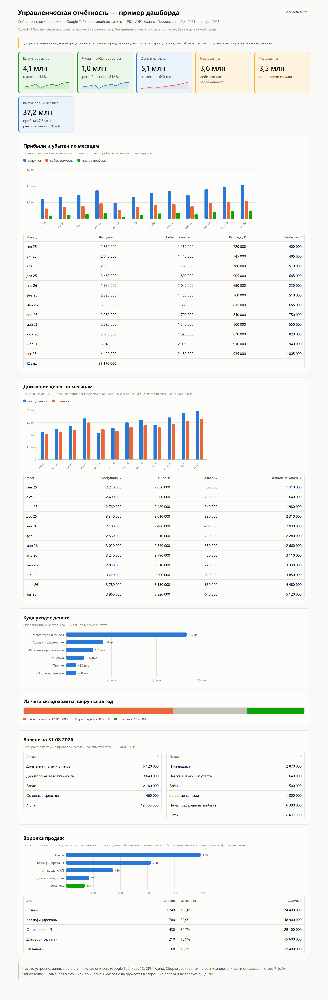
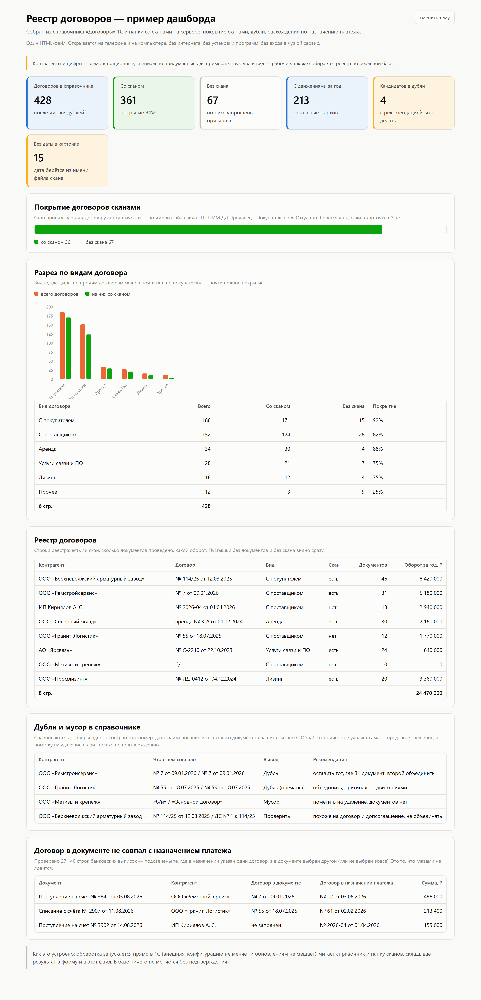

Автоматизация, которая помогает зарабатывать больше
Меньше ручной работы в 1С, быстрее счета и платежи, цифры бизнеса на одном экране. Не новые затраты, а меньше расходов и больше прибыли с тех же людей.
Посмотреть примеры
Готовые обработки для 1С
Что это даёт собственнику
Меньше расходовБухгалтер и менеджеры не набивают то, что можно собрать само: платёжки, выписки, сверки.
БыстрееСчёт поставщика превращается в платёжку и готовый файл для банка за минуты, а не за день.
Видно всёВыручка, прибыль, деньги на счетах и воронка продаж на одном экране с телефона.
Порядок в договорахВидно, где нет скана, где дубли и где договор не совпадает с оплатой.
Примеры дашбордов

Управленческая отчётность
Выручка и прибыль по месяцам, движение денег, расходы по статьям, воронка продаж. Открывается на телефоне без входа и программ.
Открыть пример

Реестр договоров
Покрытие договоров сканами, дубли и опечатки, расхождения между договором в документе и назначением платежа.
Открыть пример
Все компании, суммы и контрагенты на этой странице вымышленные. Реальные данные клиентов здесь не показываются.
Что ещё делаю
1СВнешние обработки, загрузка выписок, ЭДО, цепочки документов, сверки между базами.
Связки систем1С, банк, CRM, МойСклад, Excel и таблицы обмениваются данными сами.
Боты и ИИ-агентыОтветы клиентам и кандидатам в Telegram и ВК, напоминания, сбор заявок.
Обсудить
Напишите, что в учёте или отчётах забирает больше всего времени, и я отвечу, что из этого можно убрать.
Написать во ВКонтакте
Профиль на Инфостарте